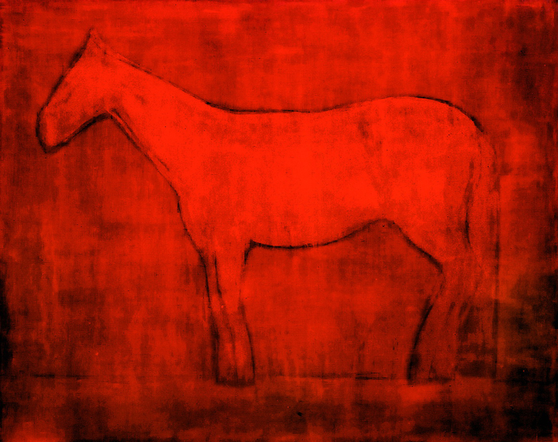
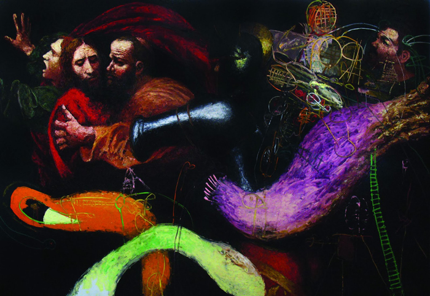

Представники сучасного мистецтва
Анатолій Криволапа
Про Анатолія Криволапа сьогодні говорять чи не найбільше. Він – найдорожчий серед представників сучасного українського мистецтва на міжнародному арт-ринку. У жовтні 2013 року на торгах аукціону “Phillips de Pury & Со” в Лондоні роботу “Кінь.Вечір” було продано за $186 тис. Рекордну суму ще ніхто з інших митців не зміг перевершити.

Олександр Ройтбурд
Картину Олександра Ройтбурди з серії «Прощавай, Караваджо!» у 2009 р. було продано на лондонському аукціоні “Phillips de Pury & Co” за $97 тис. Цікаво, що надихнув художника на створення серії успішних картин резонансний випадок: викрадення з Одеського музею західного і східного мистецтва роботи Караваджо «Поцілунок Іуди».

Василь Цагалов – один з найвідоміших сьогодні українських художників. Прославився своїми провокаційними роботами: він торкається тем релігії, зображає оральний секс. Картину Василя Цаголова з циклу «Офісна любов-2» купили за $53, 6 тис. на аукціоні Phillips de Pury & Company на початку червня 2009 року. Того ж року на Sоthеbу’s картину Цаголова «Зайчик» придбали за $41 тис. Це офіційно задокументовані продажі. Однак існує і неофіційний ринок «з рук у руки». Інсайдери подейкують, що картину «Кого боїться Хьорст» один колекціонер придбав за близько $100 тис.